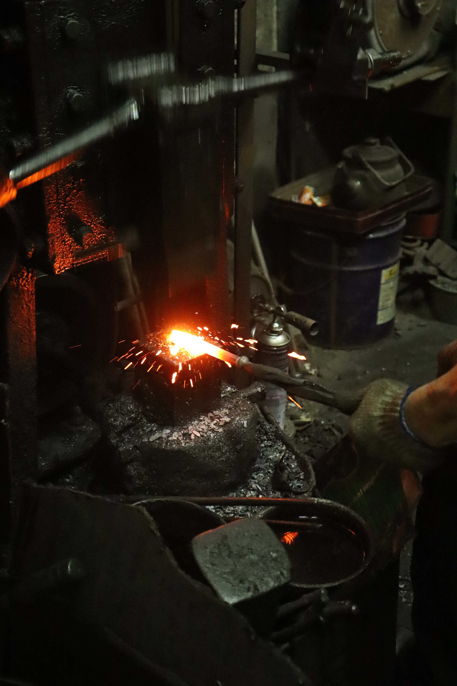
又是一個寧靜明媚的早晨，萬華西昌街尾一間老舊陰暗的店鋪傳出清脆的鏘鏘聲，與周圍新建的社區大樓相比之下顯得格格不入。老師傅忙進忙出，整理剛用炭火燒製整形的鑽頭。這裡是大台北地區僅存的一間手工打鐵店——三秀打鐵店。
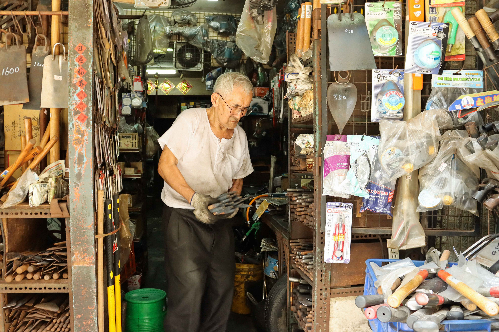
打鐵店第二代的張秀榮師傅現年79歲，仍日複一日拿著笨重的鐵器在上千度的火爐與撞錘間往返，不知不覺已經工作了一甲子，也迎來三秀打鐵舖開業至今的第101年。然而這間百年打鐵店，卻面臨著即將被時代淘汰的困境。
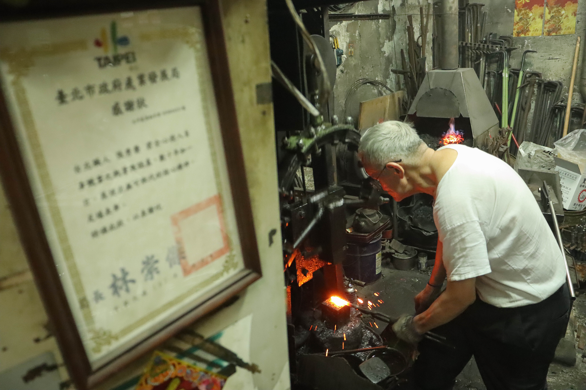
第三代的小老闆說，現在大公司的大筆訂單早已被自動化工廠搶走，至今還光顧打鐵店的客人，只剩下家庭與工人等散戶。他們的日常工作就是幫客人敲敲菜刀，或者替工人重新為鑽地、鑿牆用的鑽頭塑型。
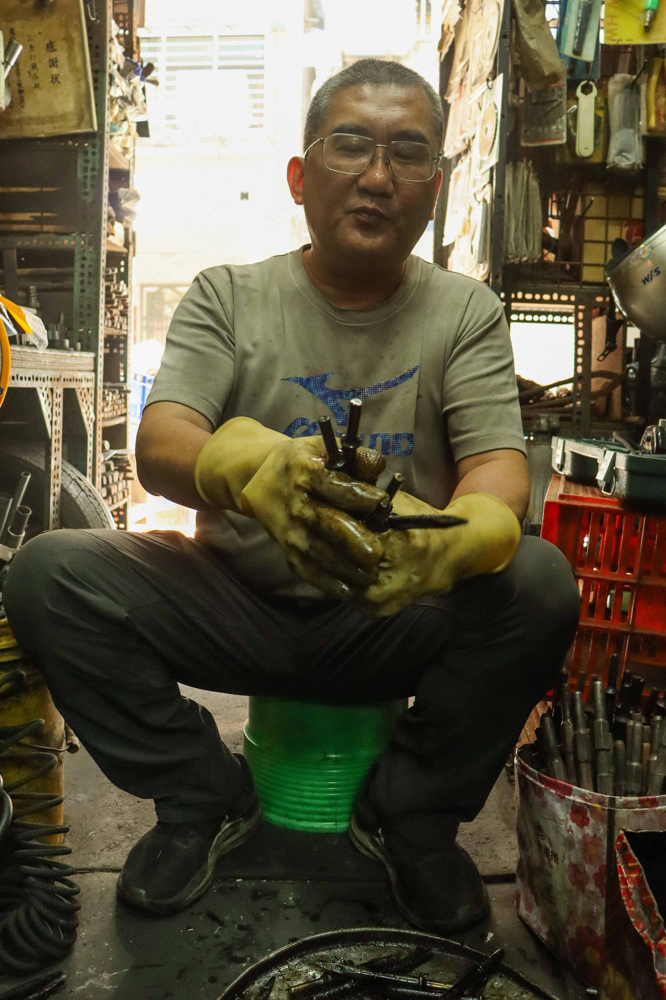
老師傅工作時，小老闆則在一旁待命，老師傅手一揮，他就起身將錘打好的鑽頭從冷卻油中撈出分類。
提起工廠量產品與手工製品的不同之處，小老闆露出既無奈又感嘆的眼神。自動化工廠為了節省成本，自然不會選用最上等的材料，做工也不如手工來得厚實；標準化產品雖然美觀，卻不如這一根根沾滿黑油的手打鑽頭來得耐用。現代人往往有撿便宜的心態，卻只是間接把成本轉嫁給自己而已。自動化生產系統引進台灣後，也讓打鐵舖的客人日益減少。
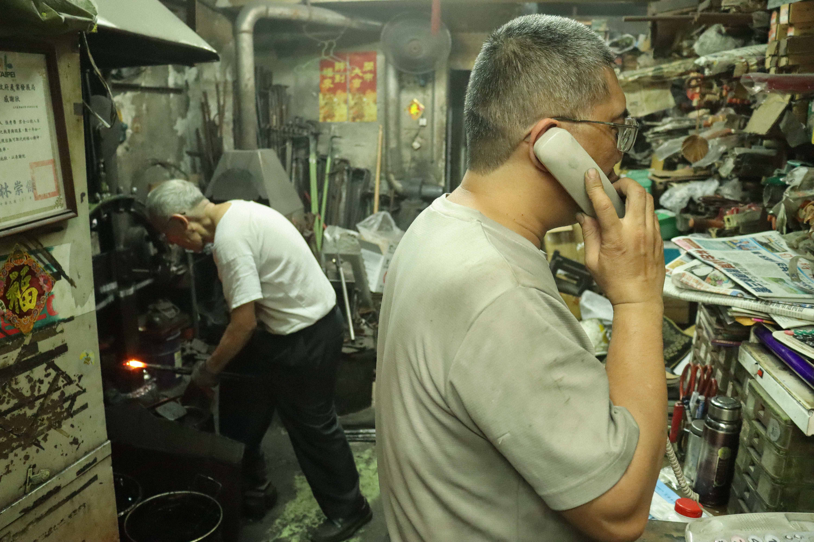
電話鈴聲一響，小老闆立刻脫下手套起身去接。「喂，三秀」老練的口氣聽起來就像接到老友電話那樣直接而親暱，不難辨識電話的另一端是熟客。父子倆在店內合作無間的身影，也說明為何三秀打鐵店能走過時代劇烈變換的一個世紀。
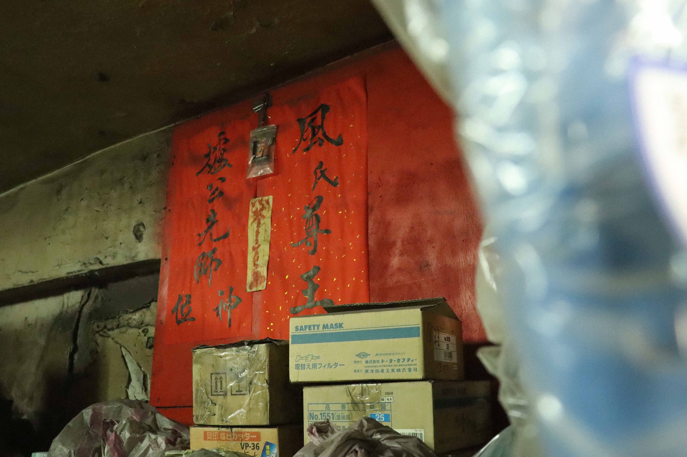
老師傅停下動作，伸手指向貼在壁龕上的神位。打鐵業首重爐火，再來則是能助燃的風，因此爐公先師與風氏尊王便成了打鐵業的行業神。
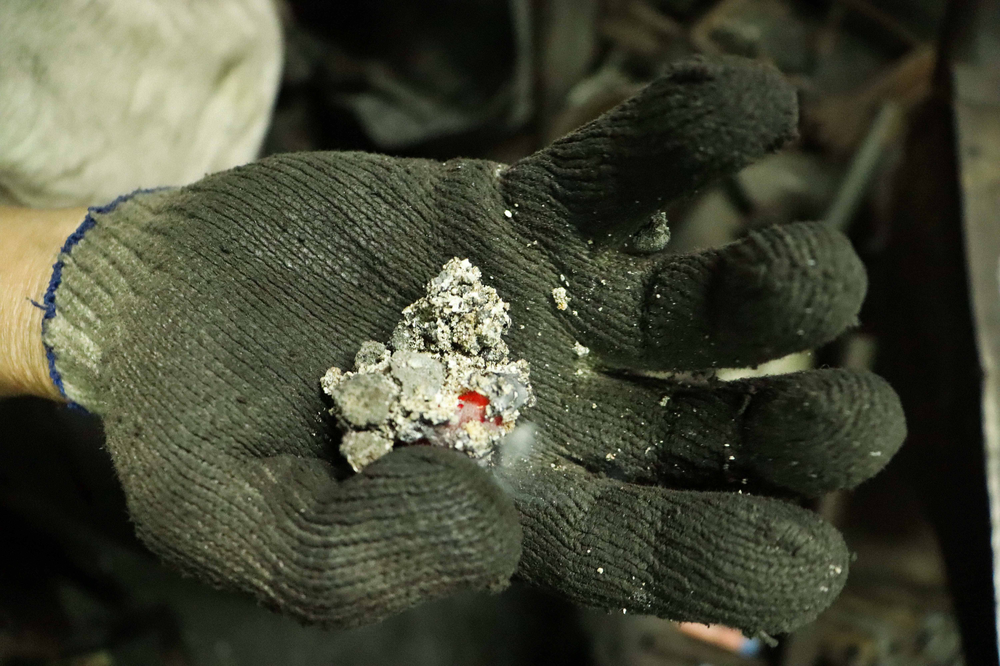
張老師傅一手將燒紅的煤炭抓起，振奮地說起煤炭的故事。這些煤炭都是火力發電廠燃燒大塊煤礦時落下的碎屑，未燃燒的煤礦有黑中帶綠的光澤，所以被稱為「黑金」。燒盡的煤炭表層則會熔化，留下銀白色的結晶，這塊煤炭的生命週期也在打鐵舖裡告一段落。
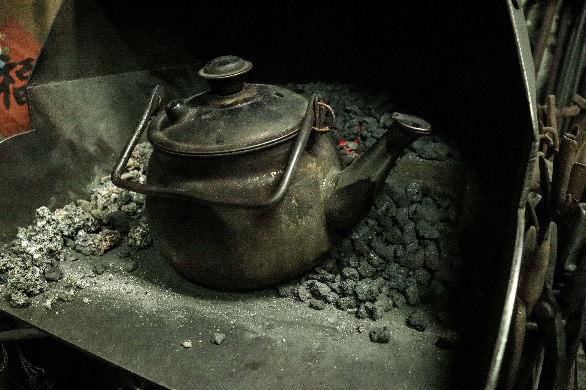
因為工作環境異味很重的關係，打鐵人工作時都以茶代水，休爐之餘就能用炭火餘溫燒茶。老師傅也說到，鐵鋪會在下午三點時休爐，因為傍晚附近住戶紛紛下班回家，雖然沒有人抗議，但他也不想打擾鄰居的安寧。
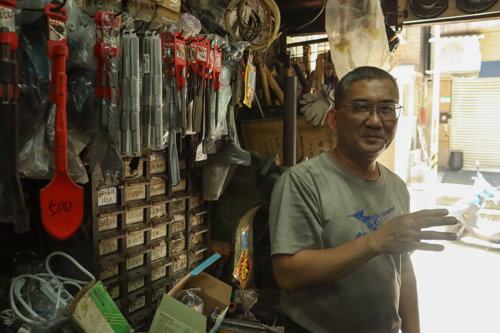
過往生意興隆時，店裡家用鐵器、農具、武器什麼都做過，小老闆提起打鐵店過往的榮光時，難掩驕傲的面容。他也曾到國外四處考察不同國家的打鐵業，特別是美國、英國，即便是手工打鐵業，卻有比台灣更高比率的機械參與製程，這也讓小老闆重新思考用不同方式讓家業繼續傳承下去的可能性。但不爭的事實是，西昌街十幾家打鐵舖同時營業的興盛榮光如今已不複存在。
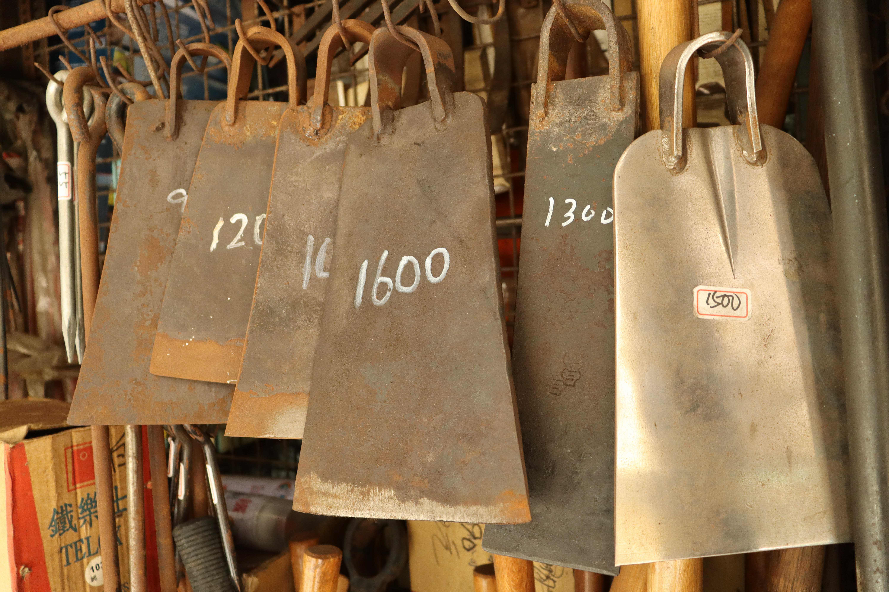
現代人買鐵器看重外表，喜歡光鮮亮麗的製品，就像架上的這排鋤頭一樣，一眼就能分辨哪個是工廠生產的。鐵亮的不鏽鋼鋤頭與一旁手工敲製而成、顏色黯淡形狀不平整而滯銷的鋤頭形成鮮明對比。
小老闆提到，鋤頭的滯銷與當地產業發展也有很大的關係。在台北只有少數農民跟政府承租三重埔的地種種菜，但他們並非全職務農，所以可以說大台北地區幾乎已經沒有農具的需求了；然而南部農業聚落的鐵鋪狀況就不太一樣。
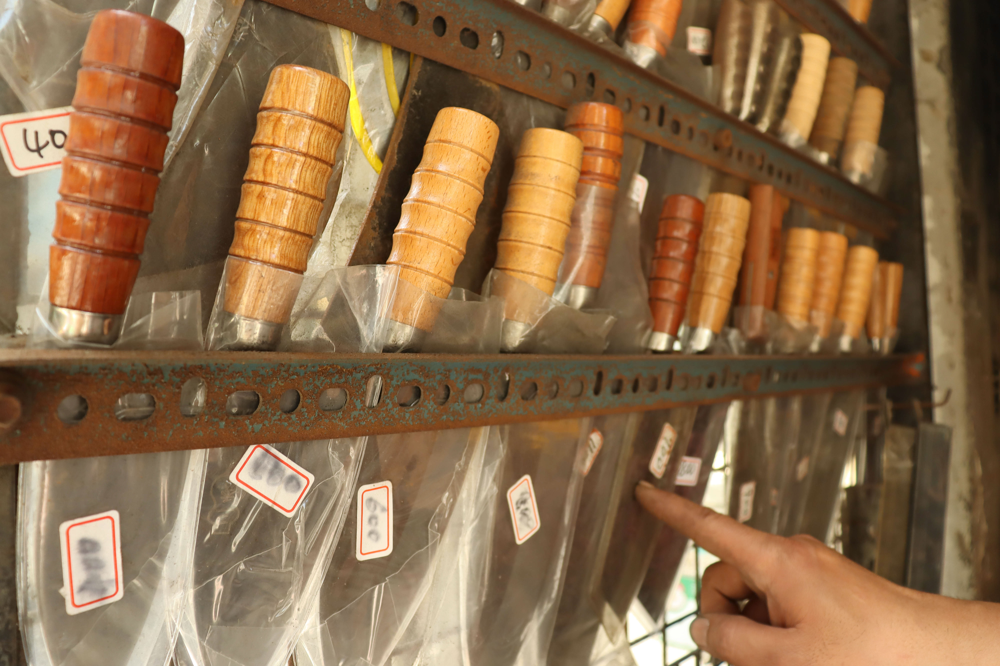
不隻農具遇到了滯銷問題，就連刀具也是如此，老闆指向架上積了薄薄一層灰的手打菜刀說道。現代人幾乎都在大型超市消費家用鐵器，連送修也是往工廠送，根本不會看上老舊的打鐵店。
除此之外，日漸嚴格的政府法規也對打鐵店的生意造成了影響。凡是要製作刀械、武器，都得先用繁複程序向政府申請，老闆就曾遇過為學生製刀卻被人檢舉而被警察盤查的情況，因此為了避免麻煩，現在店裡幾乎已經不再製作刀具了。「在國外，尤其日本，刀是藝術品；在台灣，刀就叫做凶器」小老闆無奈地說。但他也提到在山地原住民區的打鐵店可以有限度地不受法規規範。
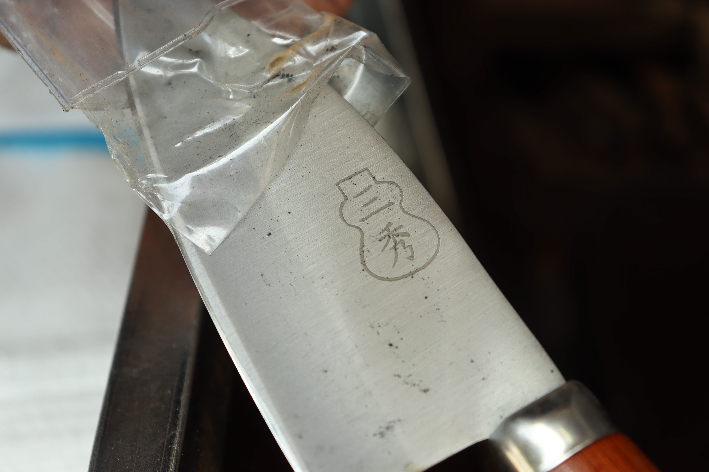
小老闆取出一把印有葫蘆與店名的手打菜刀，葫蘆是萬華打鐵店通用的認證「罵古」(Mark)，葫蘆內則烙下各家的店名。
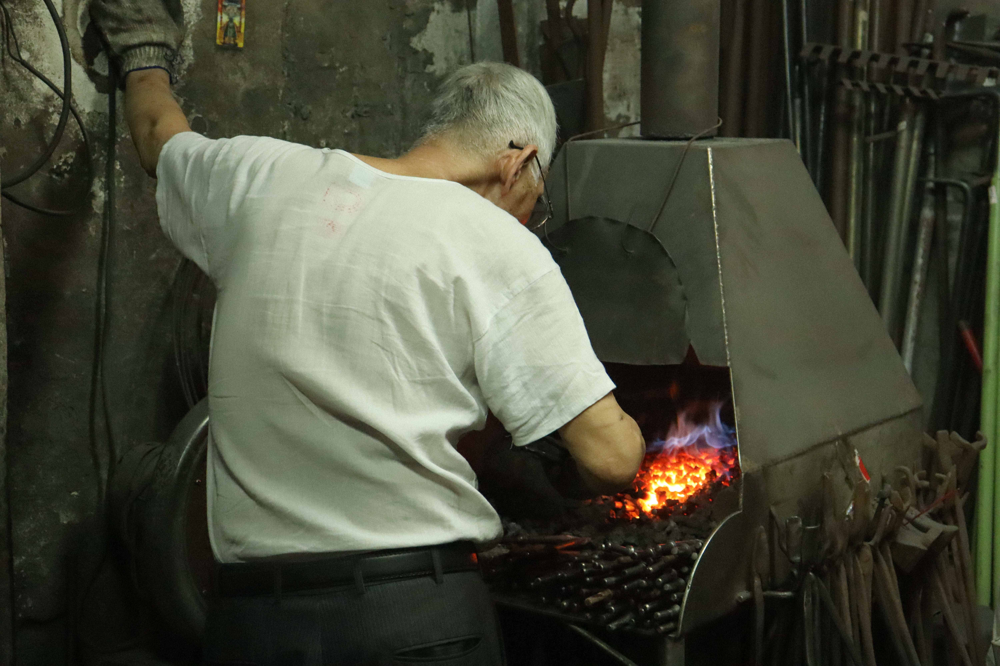
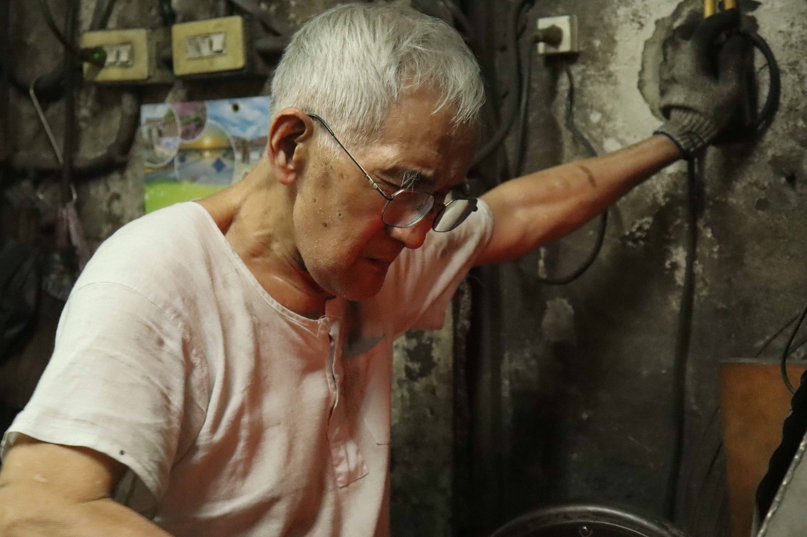
師傅們雙雙感嘆道現代人重視自動化生產的美觀，卻忽略了手工敲製鐵器的渾厚與耐用。老師傅的動作並沒有因為說故事而停下，馬不停蹄將燒紅的鑽頭放入撞錘下敲打塑型，濺出亮眼的火星。
「說不會累是騙人的啦，但我做習慣了就停不下來」周休一日，每天工作十二小時的老師傅炯炯有神地說。
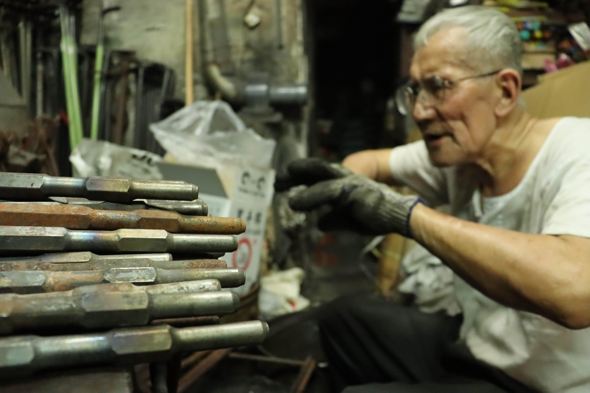

他們不確定這間僅存的打鐵店的終點會在哪裡，但是面對市場的變遷、世代觀念的交疊，三秀打鐵店的父子倆仍有他們想要守護的價值。他們都誓言，只要身體還扛得住一天，就會繼續守護這間老鐵店的餘溫，繼續用炙熱的心去打鐵。